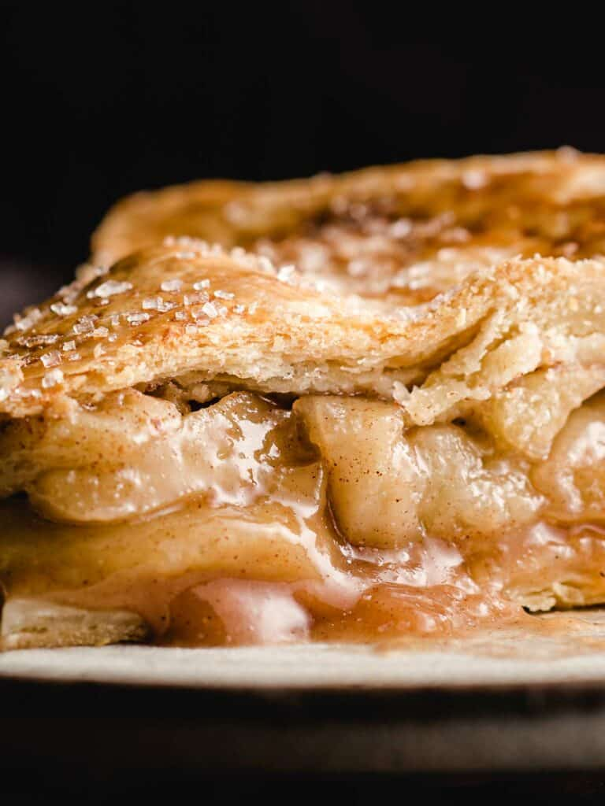

Homemade Apple Pie
Home

Juicy apple slices are coated in sugar and spices and then baked to
perfection inside a flaky homemade pie crust.
Delicious Homemade Apple Pie is a quintessential dessert that embodies warmth,
comfort, and the delightful flavors of fall. This heavenly treat features a flaky,
buttery crust enveloping a generous filling of tender, cinnamon-spiced apples.
With each bite, the sweet and tart apple slices mingle with the perfect balance
of sugar and warm spices, creating a symphony of flavors that dance on your
palate. Whether enjoyed on its own or with a dollop of vanilla ice cream,
this homemade apple pie is a true crowd-pleaser, evoking memories of cozy
gatherings and filling the air with the irresistible aroma of baked apples and
cinnamon.
Ingredients
- 2 (9") pie crusts
- 7 large Granny Smith apples (peeled, cored and sliced into ½ inch slices)
- ½ cup granulated sugar
- 2 tablespoons all-purpose flour
- 1 teaspoon ground cinnamon
- ⅛ teaspoon ground nutmeg
- 1 tablespoon lemon juice (plus the zest of half of a lemon)
- 1 large egg (lightly beaten in a small bowl for egg wash)
- 2 tablespoons sanding sugar (optional)
- Start by preparing this flaky pie crust recipe which makes
2 (9") pie crusts, one for the bottom and one for the top of the
pie. The pie dough will need to chill for at least 1 hour before
rolling out. Or use a store-bought pie crust and follow package
directions.
- Place oven rack in the center position and Preheat the oven to 400°F (204°C).
- In a large bowl, combine the sliced apples, granulated sugar,
light brown sugar, flour, cinnamon, nutmeg, and lemon juice and
lemon zest; toss to coat evenly.
- Remove the pie crust dough from the fridge and let rest at room
temperature for 5-10 minutes. On a lightly floured surface, roll one
disc into a 12" circle that is ⅛" thick. Carefully lay the crust into
the bottom of a deep dish pie plate.
- Spoon the apple filling over the bottom crust and discard juices at the
bottom of the bowl. Roll out the second disc of pie crust until it is
⅛" thick and lay it over the apple filling.
- Use a sharp knife to trim the dough along the outside edge of the pie plate.
Lift the edges where the two pie crust meet, gently press to seal and fold
them under. Rotate the pie plate and repeat this process until edges are
neatly tucked under themselves. Cut 4 slits in the top of the dough to
allow steam to vent. Place the pie on a baking sheet.